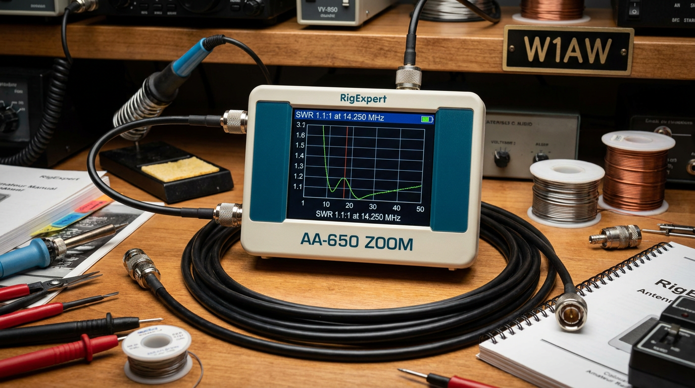
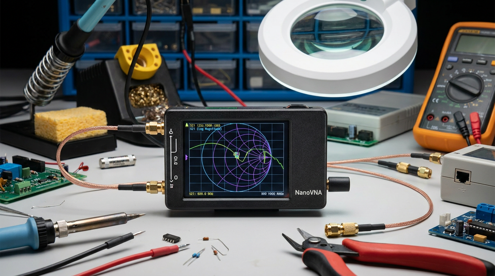
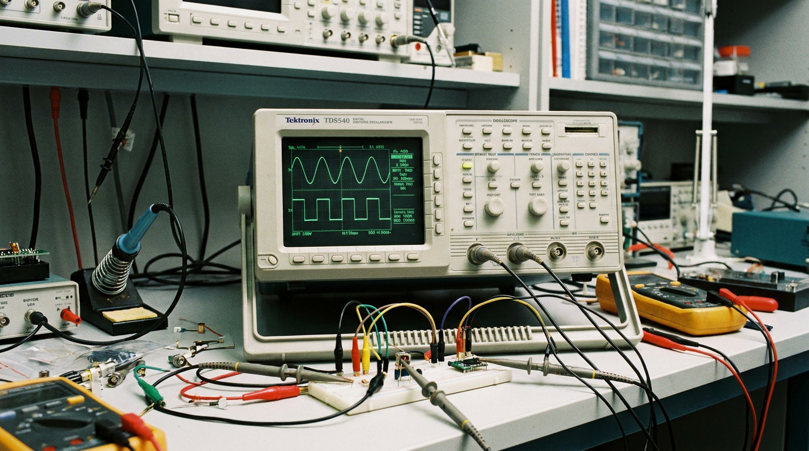

Electronics Test Equipment
A comprehensive electronics bench setup combining high-bandwidth digitizing scopes, modern RF vector network analyzers, digital logic analyzers, and classic analog vacuum tube instrumentation.
RF & Antenna Instrumentation


RigExpert AA-650 ZOOM
High-precision graphical antenna analyzer for 0.1 to 650 MHz. Measures SWR, complex impedance ($R + jX$), return loss, and cable TDR (Time Domain Reflectometry) distance-to-fault with instant Smith chart plot displays for antenna tuning.
NanoVNA Vector Network Analyzer
Compact 2-port vector network analyzer for $S_{11}$ reflection and $S_{21}$ transmission S-parameter measurements across 50 kHz to 3 GHz. Essential for tuning RF filters, duplexers, attenuators, and antenna matching networks.
Oscilloscopes & Signal Analysis

Tektronix TDS540 Scope
4-channel 500 MHz digital digitizing oscilloscope with 1 GS/s real-time sampling. Ideal for high-speed digital pulse evaluation, power supply ripple analysis, and analog RF carrier waveform diagnostics.
PicoScope PC Oscilloscope
High-resolution USB oscilloscope and spectrum analyzer featuring deep memory buffering, serial bus protocol decoding (I2C, SPI, UART, CAN), and FFT frequency-domain spectrum analysis.
Saleae Logic Analyzer
Multi-channel digital logic analyzer used for protocol decoding, micro-controller bus timing verification, SPI/I2C state machine debugging, and embedded firmware telemetry capture.
Power & Legacy Analog Bench Equipment
Heathkit Triple Power Supply
Classic linear bench DC power supply featuring dual isolated 0–20V variable tracking outputs and a regulated 5V logic supply. Essential for low-noise analog circuit and microcontroller prototyping.
Heathkit VTVM Meter
Precision vacuum tube volt meter with an ultra-high 11 MΩ input impedance. Perfect for measuring high-impedance RF grid voltages, AGC bias, and vintage radio alignment without circuit loading.
Equipment Specifications Matrix
| Instrument | Type / Category | Key Capabilities | Primary Applications |
|---|---|---|---|
| RigExpert | Antenna Analyzer | SWR, $R+jX$, Smith Chart, Return Loss | HF/VHF antenna tuning & coax fault location |
| Tektronix TDS540 | Digitizing Oscilloscope | 500 MHz, 4 Channels, 1 GS/s Sampling | High-speed digital signals & RF carrier evaluation |
| NanoVNA | Vector Network Analyzer | 2-Port $S_{11}$ & $S_{21}$ S-Parameters (50 kHz - 3 GHz) | Filter tuning, duplexers, & RF matching networks |
| Saleae Logic | Logic Analyzer | Multi-channel, I2C / SPI / UART protocol decoding | Embedded firmware & bus timing verification |
| PicoScope | USB Oscilloscope / Spectrum | Deep buffer, FFT spectrum, high resolution | Signal integrity & audio/RF FFT domain analysis |
| Heathkit Triple Supply | Linear DC Power Supply | Dual 0-20V tracking + 5V regulated logic output | Low-noise analog & digital circuit prototyping |
| Heathkit VTVM | Vacuum Tube Volt Meter | 11 MΩ input impedance, AC/DC/Ω measurement | High-impedance RF grid bias & tube radio alignment |
Software & Documentation Links
Tektronix TDS540 Service Manuals
Official Tektronix TDS 520 & TDS 540 digitizing oscilloscope service manuals, schematics, calibration guides, and capacitor maintenance documentation.
View TDS540 Repair ManualsSaleae Logic Software
Official download and logic analyzer software documentation for digital protocol decoding.
Visit Saleae.comPicoScope Software
Pico Technology scope software suite for PC oscilloscope control and spectrum analysis.
Visit PicoTech.comRigExpert AA-650 ZOOM Docs
RigExpert AA-650 ZOOM user manual, firmware updates, and AntScope2 PC & mobile software suite.
View AA-650 ZOOM ManualNanoVNA User Guides & Software
Official NanoVNA user manuals, calibration instructions, and open-source NanoVNA-Saver software suite repository.
View NanoVNA Docs